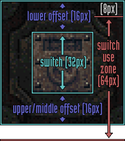
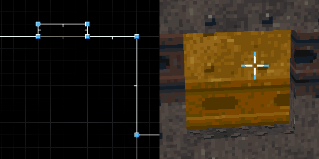
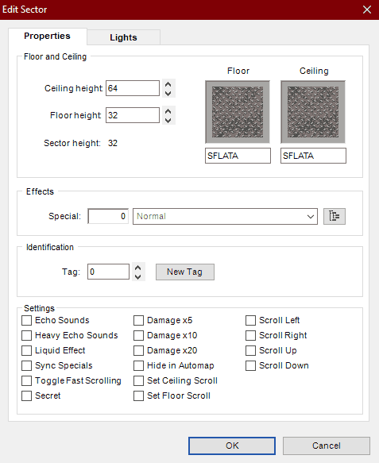
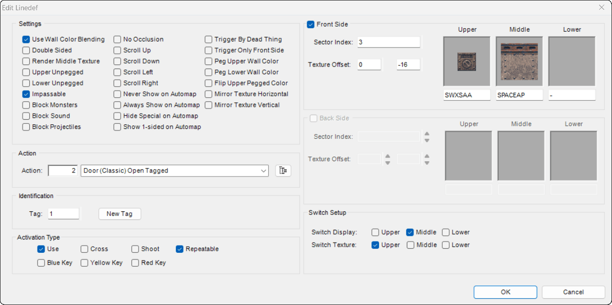
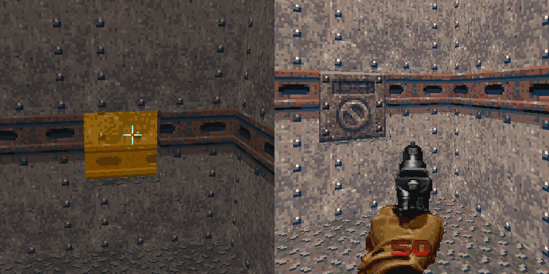

Switches
Switches are wall graphics which the player can interact with to cause actions in the game. Their graphics appear in on/off pairs in the texture lump (see the textures section for specifics on switch graphics). Doom 64 has an unique way of constructing switches that is different from prior Doom games. This allows switch graphics to be placed on any wall texture and offset in any direction. The switch texture lighting is not affected by the wall gradient colors, rather it is adjusted according to the "Thing" color. With the use of small sectors, this allows the switch color to be independant of the wall color itself.
In Doom 64, there are additional linedef flags to determine whether the switch is to be displayed on the upper texture, middle texture, or the lower texture of the linedef. By default, switches are offset from sector floors and ceilings and can be further offset by the lindef texture vertical offset. Horizontally textures are always displayed in the center. Upper displayed textures are displayed 16 units above the back sector ceiling height to the switch bottom. Middle displayed textures are displayed 16 units above the front sector ceiling floor to the switch bottom. Lower displayed textures are displayed 16 units below the back sector floor height to the switch top. These are additionally offset by the texture offset.
Switches can be set up to be activated in different ways, such as the "use" button and/or shooting. Switches that can be shot can only be activated with hitscan weapons such as: pistol, chaingun, chainsaw, and the two shotguns. Projectile weapons (plasma and rockets) cannot activate shootable switches. When the player uses the use command on a switch, there is a check to see if the player is the right height. It checks if the player's feet are between the middle of the switch and 64 units below the middle of the switch. Given that the players view centers at 56 units above the player's feet, the player can activate the switch 40 units below the middle of the switch and 24 units above the middle of the switch from the player's point of view. When sectors are hit by a hitscan weapon, this check is ignored and switches can be activated from any height (sectors can be used to block hitscans).
Doom Builder 64 Basics
Note that, when making switches how it was done originally in Doom 64, the switch graphics do not show up properly in Doom Builder 64. But when tested in game it will work as originally intended. This is because switches are displayed as decals and not textures, which Doom Builder 64 has not implemented yet.
You can find the options to make switches in the "Edit Linedef" panel. Then depending on what you want the switch to do, whether it be a door action, floor action or a macro script, select the appropriate option in "Action". This will apply to the sector with the corresponding number in "Identification". In "Activation Type" you can select "Use" if you want the player’s use action to activate it, and/or you can select "Shoot" if you also want a shootable switch. This switch will only work once, but if you further select "Repeatable" then the switch can be used multiple times.
The "Switch Setup" section allows you to determine how the switch should be displayed to the player. First, the "Switch Display" option determines which vertical portion of the linedef (Upper, Middle, or Lower) the switch graphic will attach to. If you want to add a switch to a wall of a lowered ceiling, then select "Upper". Then if you want to add a switch between a ceiling and a floor to a wall select "Middle". And then if you want to add a switch to the side of a raised floor select "Lower". If your desired surface is missing a texture, the switch will not show up, but this surface can be any texture. This allows you to overlay the switch over various textures to create interesting looking switches. Then "Switch Texture" is to set which surface you plan on selecting the switch texture. This surface should be one that is not visible to the player, so if you don’t have a lowered ceiling put it in "Upper", and if you don’t have a raised floor put it in "Lower"
Switches on single-sided linedefs must have their display set to middle and texture set to upper to show up properly. Conversely, middle displayed switches on double-sided linedefs seem to not activate with use, however they can be shot.
The "Sidedefs" tab allows you to choose the textures you want on the switch and the wall behind it as mentioned in the previous paragraphic. So if you selected "Lower" for "Switch Texture" this will be where you select the switch you want to use. If you want a switch that turns on, then select the switch texture which ends with an "A". When the player uses that switch, it will automatically switch to the version of the texture which ends with "B". You can select the "B" version of the switch if it is one you want to turn off and the engine will handle the switch to "A" for you when the player uses it.
Inset Switch Example
Inset switches are embedded into walls and typically are made with a sector that is 32 units wide and 32 units in height, which matches the size of a switch texture. They should be 32 units above the nearby floor so they are a good height for a player to activate them. However other heights can be used for shootable switches and such.
Below are the exact sector properties for one shown above.
Now for the very top of the linedef (the most inset line), which the switch should lie on, you can set these properties. For this switch in particular, it is opening a sector door tagged 2, but you can change it to whatever you need the switch to do. This switch is set to activate on use so "Use" is checked and it is intended to be used more than once, so "Repeatable" is checked. Since it is a one sided line-def the Switch Display set to "Middle". Then Switch Texture to "upper" as that is where the switch decal will be defined for this switch. Here the "SWXSAA" texture is chosen for the switch. It will automatically switch to "SWXSAB" when the player uses it. Since switches are always offset from the edge by 16 units, this inset requires a -16 Y texture offset to display correctly.
That is all you need for this type of inset switch! The image below shows what the switch looks like in Doom Builder 64 (left) and the Doom 64 Remaster (right). Notice that due to our offset, for inset switches the texture in Doom Builder 64 is offset downard and further it does not show the switch. But in the Doom 64 Remaster, the switch shows up just fine.
Engine Specific Differences
For most Doom 64 engines, except for Doom 64 EX, the player's activation distance can pass through single-sided linedefs (walls). This means that, if the activating linedef is not far enough away, a player can activate a switch or a door through a thin wall. A remedy to this is to make the wall thicker. Depending on the angle, the "Trigger Only Front Side" flag can be used to prevent the player from activating a backside of a linedef as well.
On the Nintendo 64 and Doom 64 Remaster, switches can be activated from any height when shot unless a sector of sufficienct size blocks the hitscan. Even if the switch is embedded into the floor, if a player's shot can cross the linedef, it will be activated. However a raised sector can be used to block shots from activating linedefs; particularly inset switches solve this problem.